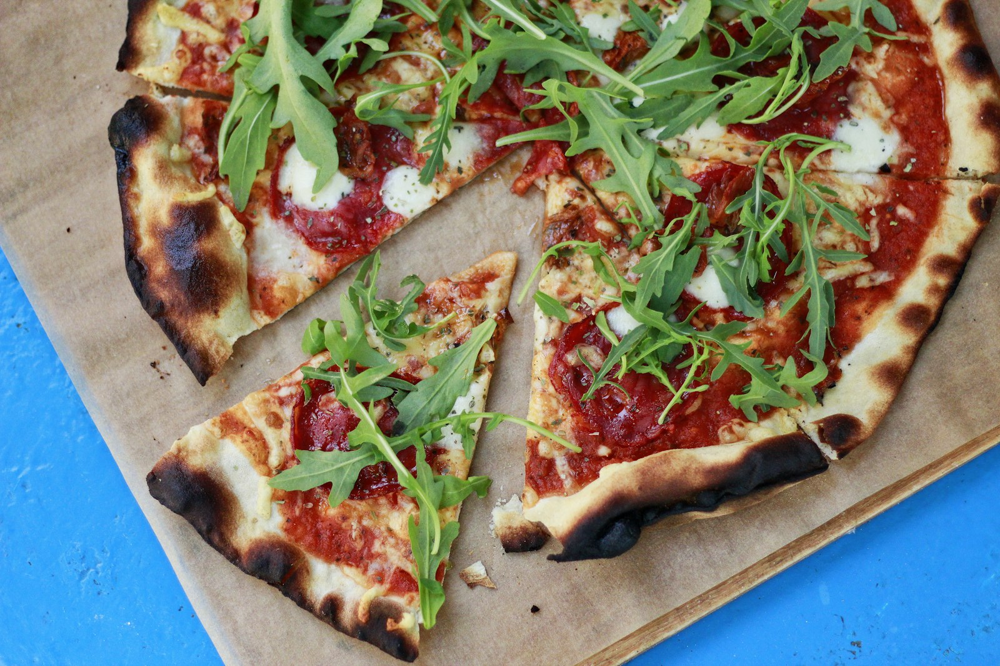
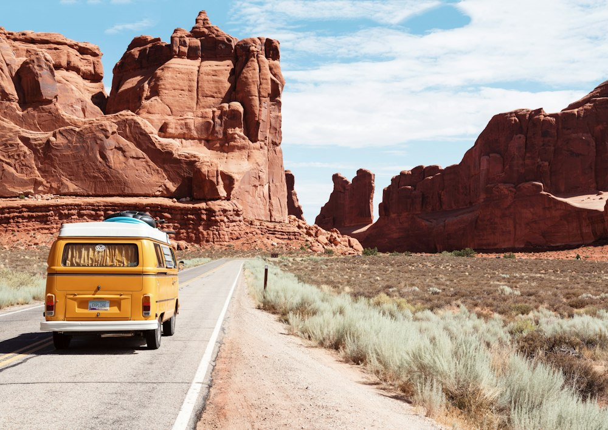
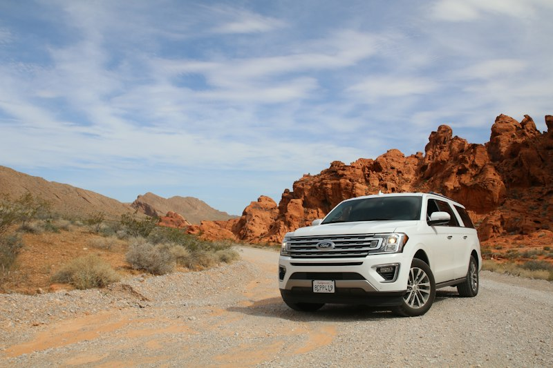
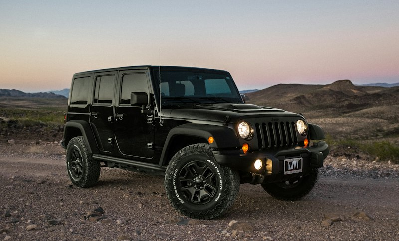
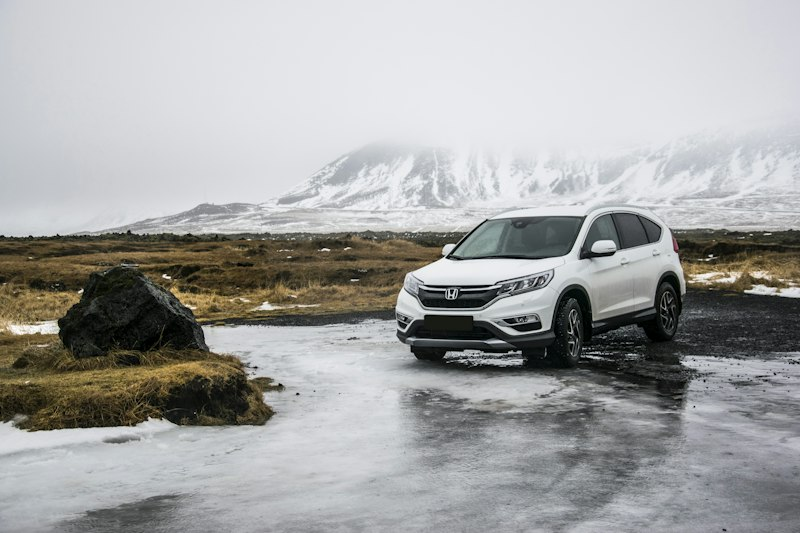
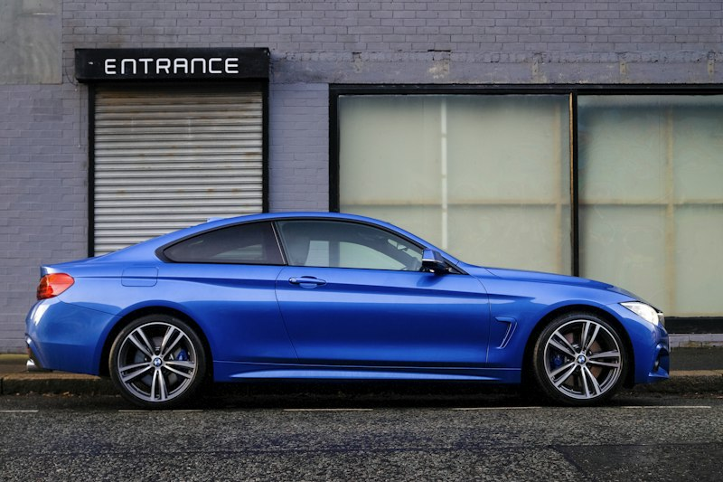
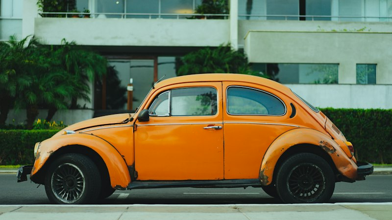

Пицца, рождённая в дороге,
замешанная на настоящей дружбе.
Мы — Сергей, Дима и Семён. Семь лет назад мы загрузили в багажник старого красного универсала мешок итальянской муки, походную чугунную сковороду и отправились в путь. Мы ломались на перевалах, пекли пиццу на речных камнях и находили редчайшие рецепты, которыми теперь делимся с вами.
Как родилась Pizza Pi Drizza
История о том, как лопнувший патрубок радиатора в Тоскане, мешок муки и итальянская бабушка навсегда изменили судьбу трех друзей.
Осенью 2017 года трое закадычных друзей — автомеханик Сергей, повар-самоучка Дима и музыкант-столяр Семён — скинулись по 130 долларов и купили потрепанный жизнью красный универсал Volvo 240 1984 года. В багажнике лежали спальники, набор гаечных ключей и мечта увидеть настоящую родину пиццы.
«Машина закипела посреди холмов Сан-Джиминьяно. Пар валил из-под капота как из паровоза. В этот момент из каменного дома вышла синьора Роза с деревянной ложкой в руках…»
Увидев трех промокших парней, пытающихся разобрать термостат прямо на обочине, синьора Роза всплеснула руками и с громогласным смехом воскликнула: «Mamma mia, che pi drizza!» — что на местном шутливом наречии означало «Ну что за нелепая, но прекрасная кутерьма!».
Она пустила нас в свой дом, напоила домашним вином и показала свою гордость — помпейскую дровяную печь, которой было больше ста лет. Именно там Сергей впервые прикоснулся к 60-летней закваске, Дима влюбился в томаты Сан-Марцано, а Семён поклялся, что построит такую же печь своими руками. Так родилась Pizza Pi Drizza — пиццерия, в которой живет дух дорожных приключений.


Кто стоит за каждым кусочком
У каждого из нас свой характер, своя любимая машина и своя священная роль на кухне.
 Тесто & Механика
Тесто & Механика
Сергей
Бывший инженер и автомеханик. Для Серёги тесто — это сложнейший механизм, который нужно чувствовать пальцами. Он может настроить карбюратор старого Volvo по звуку выхлопа, а влажность теста определяет с точностью до грамма, просто прикоснувшись к опаре.
 Вкусы & Ингредиенты
Вкусы & Ингредиенты
Дима
Неугомонный шеф и ботаник-путешественник. Всегда сидит за рулем с мятым бумажным атласом дорог. Способен свернуть с автобана на 150 километров в сторону, если узнает, что в горной деревушке фермер делает редкий копченый сыр или собирает горный шафран.
Семён
Мастер по дереву, музыкант и хранитель дровяной печи. Сложил нашу помпейскую печь из огнеупорного шамота своими руками. Знает по имени всех постоянных гостей, играет на гитаре по вечерам у открытого огня и выбирает только сухостойный бук и дуб.
Машины, которые придумали пиццу
Каждая наша фирменная пицца обязана своим рецептом поломке одной из этих легендарных машин в самых неожиданных уголках мира.

Volvo 240 GL Wagon
Наш первый боевой конь. Вместительный, прямоугольный и неубиваемый шведский универсал. Когда под Сан-Джиминьяно лопнул нижний патрубок радиатора, мы провели два незабываемых дня в каменном доме синьоры Розы. Именно в багажнике «Кирпича» мы привезли нашу первую закваску и 50 кг отборной муки Caputo из Неаполя.
- Мешок муки Caputo Tipo 00
- Колодезный трос и ключи на 13
- Ящик томатов Сан-Марцано
- Сливочная фермерская страчателла

Volkswagen T2 Westfalia
Солнечный дом на колесах с подъемной парусиновой крышей. На крутом горном серпантине над Коринфским заливом у нас порвался ремень генератора. Местный оливковод Никос помог отбуксировать нас к своему дому, а в обмен на запасной ремень от Серёги отдал нам пятилитровый бидон свежайшего оливкового масла, бочковую овечью фету и дикий тимьян.
- Бидон масла Каламата холодного отжима
- Овечья бочковая фета
- Акустическая гитара Семёна
- Печеный перец Флорина

Mercedes-Benz W124 300TD
Монументальный дизельный крейсер, проглатывающий любые перевалы. На высоте 2379 метров нас застала ночная метель. Машина не подвела: дизель тихо шептал всю ночь, согревая салон, а Семён развел костер из сухих буковых поленьев и испёк на чугуне лепешки с копченым сулугуни, грецким орехом и острой абхазской аджикой.
- Буковые поленья для дровяной печи
- Копченый сулугуни в рассоле
- Грецкие орехи и соус наршараб
- Чугунная походная сковорода

ВАЗ-2121 «Нива»
Короткобазный внедорожник, которому нипочем колеи и торфяные броды. Когда мы застряли на реке Катунь и четыре часа тянули лебедку за вековую лиственницу, вокруг открылись поляны золотых лисичек и белых грибов. Вечером у костра с кедровыми шишками родилась самая сытная северная пицца.
- Корзины свежих лисичек и белых грибов
- Копченый бекон из таежной дичи
- Жареные кедровые орешки
- Ручная лебедка и кованый топор

Citroën DS 21 Pallas
Легендарная французская «Богиня» с космическим дизайном. Когда на плато Валансоль потекла зеленая гидрожидкость LHM и машина плавно опустилась брюхом в цветущую лаванду, нас приютил пасечник Жан-Поль. За три дня ремонта мы узнали всё о козьем сыре шевр, инжире и лавандовом меде.
- Молодой козий сыр шевр
- Домашний конфитюр из черного инжира
- Банка лавандового золотого меда
- Прошутто 18 месяцев выдержки
Секрет идеальной пиццы Pi Drizza
Калькулятор теста от Сергея и главные законы нашей кухни: как повторить неаполитанский шедевр на любой кухне.
Калькулятор Теста Сергея
Выберите, сколько пицц вы хотите испечь — система мгновенно рассчитает точные граммовки по формуле 68% гидратации.
1. Замес 15 минут → Отдых при комнатной температуре 2 часа.
2. Формовка шариков → 48-72 часа в холодильнике при +4°C.
3. Согревание перед выпечкой: 2 часа при комнатной температуре.
1. Ферментация Biga 72 часа
Никакой тяжести в желудке. За трое суток ферменты расщепляют сложные сахара и глютен, делая бортики воздушными, хрустящими и легкоусвояемыми.
2. Томаты San Marzano D.O.P.
Мы разминаем консервированные томаты с подножия Везувия исключительно руками с добавлением морской соли. Никаких блендеров, чтобы не разбить косточки.
3. Жар печи 450°C за 90 секунд
Сухие буковые и дубовые дрова создают сухой взрывной жар. Влага мгновенно вскипает, образуя знаменитые «леопардовые пятна» на воздушной корочке.
4. Маленькие фермы вместо заводов
Все сыры, бекон и травы мы привозим от конкретных фермеров, с которыми подружились во время автопутешествий. За каждым продуктом стоит живой человек.
Карта наших вкусовых экспедиций
Нажимайте на точки маршрута, чтобы узнать, в какой точке сломалась машина и какой ингредиент мы там нашли.
Сан-Джиминьяно, Италия
Остановка из-за лопнувшего шланга радиатора. Встреча с синьорой Розой и ее 60-летней закваской. Рождение «Тосканского Кирпича».
Слова тех, кто делил с нами огонь
Записки наших гостей, случайных путников и друзей, которые заглянули на запах дровяной печи.
Оставьте свою записку на стене
Поделитесь вашей историей или впечатлениями от нашей пиццы
Приезжайте в гости к Pizza Pi Drizza
У нас нет пафоса ресторанных сетей. У нас трещат настоящие буковые поленья в печи, играет винил, на стенах висят старые номерные знаки и дорожные карты, а чай и кофе варятся на живом огне. Приходите с семьей, друзьями и четвероногими попутчиками!
Наш адрес
Уютная набережная, старый кирпичный амбар у воды
Парковка для ретро-автомобилей и велосипедов прямо у печи
Часы работы
Вторник — Воскресенье: с 12:00 до 23:00 (или до последнего шарика теста)
Понедельник: день замеса опары и ремонта машин
Просто связаться с нами:
Семён у телефона, Дима на кухне, Сергей у печи